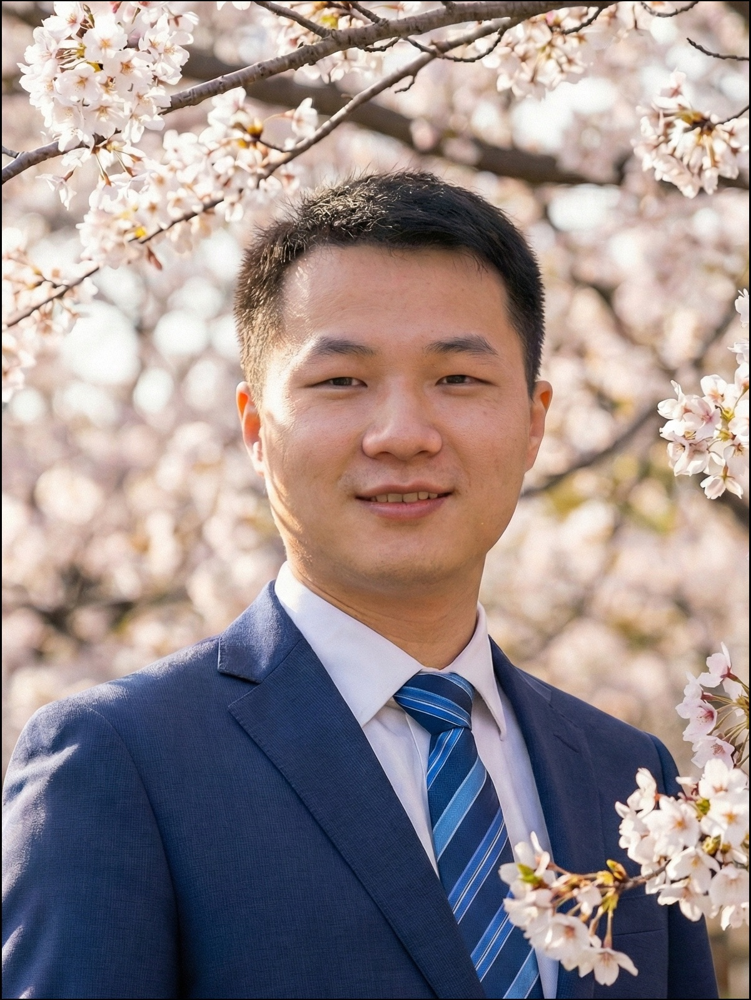
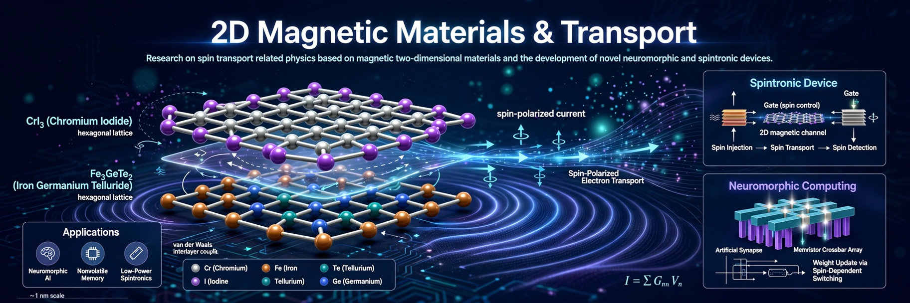
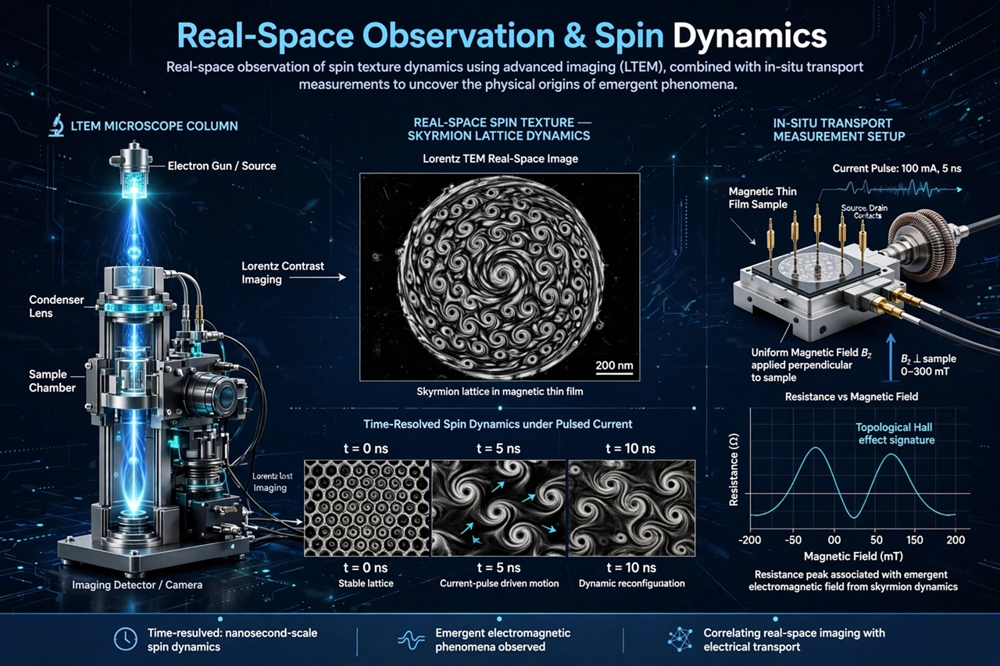

Topological Magnetism & Spintronics
极限量态与自旋电子学 | 姚光研究室

Email: yaoguang(at)itech.edu.cn
邮箱: yaoguang(at)eitech.edu.cn
Study of room-temperature topological spin textures and their applications in advanced functional spintronic devices, aiming for next-generation memory and logic technologies.
致力于室温拓扑自旋结构（如斯格明子）的基础研究及其在先进功能性自旋电子器件中的应用，为下一代存储与逻辑技术提供支持。
Research on spin transport related physics based on magnetic two-dimensional materials and the development of novel neuromorphic and spintronic devices.
基于磁性二维材料的自旋输运物理研究，以及新型类脑神经形态计算器件和自旋电子器件的开发。

Real-space observation of spin texture dynamics using advanced imaging (LTEM), combined with in-situ transport measurements to uncover the physical origins of emergent phenomena.
利用洛伦兹透射电镜（LTEM）对自旋结构的动力学行为进行实空间观测，并结合原位输运测量，揭示衍生量子现象的物理起源。
